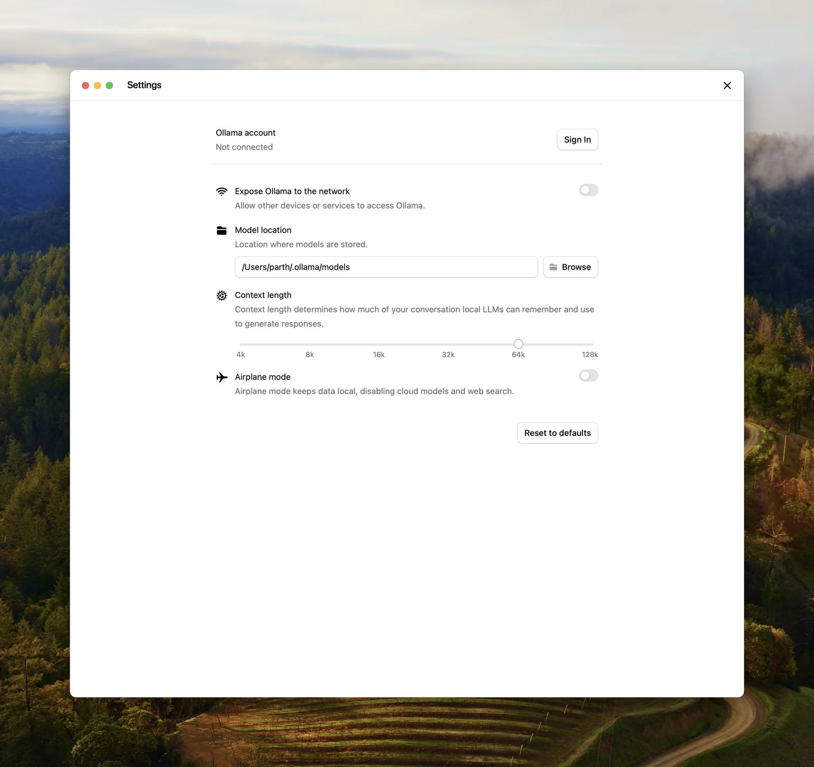

Why it fits
Ollama is MIT-licensed and free. Local models run entirely on your own hardware, so prompts and answers stay on your machine; the optional cloud models are a separate, paid service you do not have to use.


Getting started
Prerequisites (from the official docs):
- macOS Sonoma (14) or newer (Apple silicon with GPU support, Intel CPU only), Windows 10 22H2 or newer, or Linux
- On a minimal Debian or Ubuntu system, install
zstdbefore the Linux script (sudo apt install zstd);install.shexits with "requires zstd" without it - Disk space for models: the docs say they "can be tens to hundreds of GB"; the quickstart model
gemma4:e2bis 4.6 GB - Memory: the quickstart recommends 8 GB of free VRAM or unified memory for that model; with less, Ollama falls back to system RAM and gets slower
Steps:
- Download Ollama for macOS or Windows from ollama.com/download, or on Linux run the install script
curl -fsSL https://ollama.com/install.sh | sh. - Open the app. On Linux with systemd, the install script starts a service. Without systemd, run
ollama serveyourself — the script may still print that the API is now available even when no server is running. - Download and chat with a local model:
ollama run gemma4:e2b(type/byeto leave). - Optional: point other tools at the local API on
http://localhost:11434.
Official docs: https://docs.ollama.com/quickstart
Linux install: https://docs.ollama.com/linux
Notes
Local versus cloud: per the official docs, cloud models run on Ollama's servers, need an account and usage credits or a paid plan, and Ollama states it does not train on cloud prompts. Local-only mode turns off cloud models and web search. The Linux one-step install pipes a script into sh; a manual tarball install and a systemd unit are documented on the same page. Speed of local models depends heavily on GPU and memory.